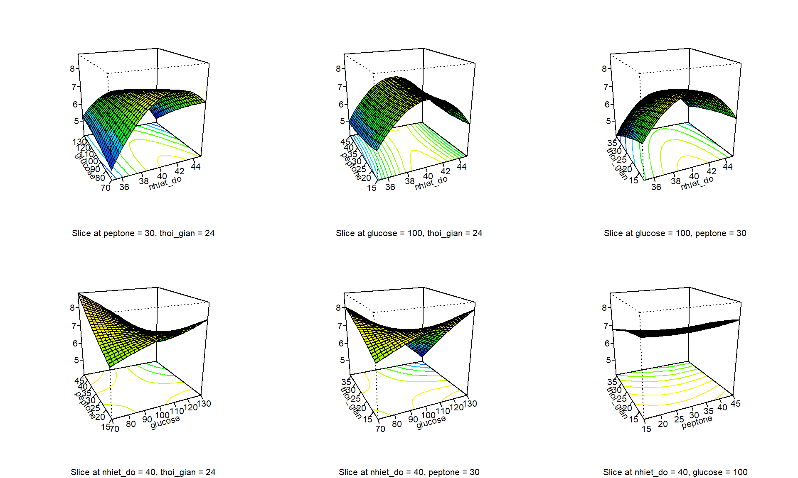
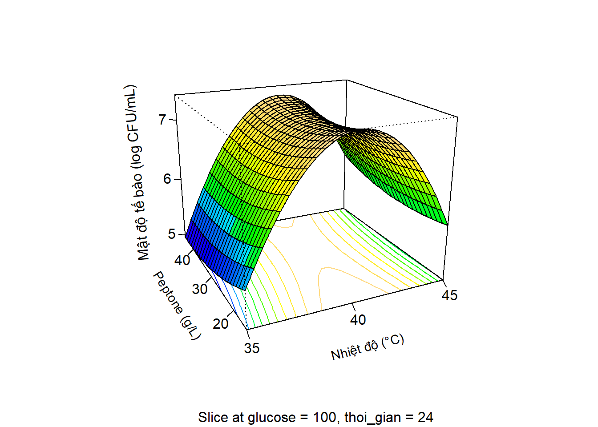
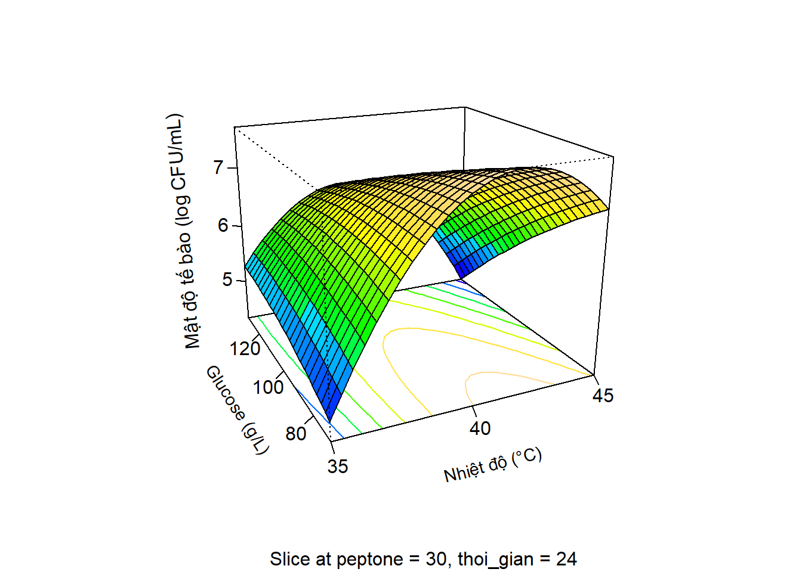
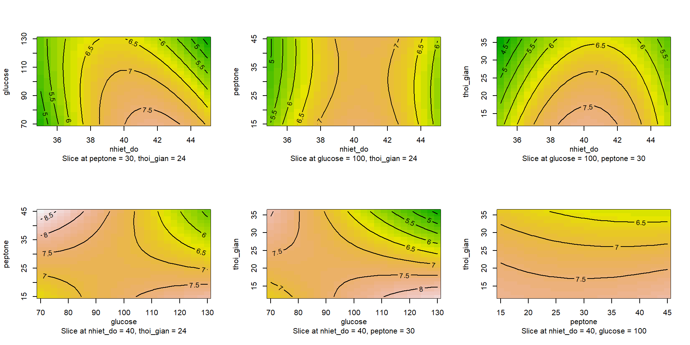

Bạn làm việc trong lĩnh vực công nghệ vi sinh, muốn tìm ra công thức nuôi cấy tế bào vi khuẩn tối ưu bằng phương pháp bề mặt đáp ứng (bố trí theo kiểu Box-Behnken design) với các yếu tố lần lượt là nhiệt độ, glucose, peptone, thời gian. Bình thường nếu làm trên Statgraphics thì cũng được, tuy nhiên giờ bạn muốn làm trên R thì như thế nào, có dễ thực hiện hay không.
Bạn tham khảo cách làm như sau nhé.
16.0.3 Cách thực hiện
Bước 1: Thiết kế thí nghiệm gồm 4 yếu tố, 3 mức để làm cơ sở cho bố trí thực nghiệm
## Ở đây mình chạy số liệu mô phỏng về mật độ tế bào (log CFU/mL)set.seed(14)log_te_bao <-sample(seq(from =3, to =10, length.out=1000), size =27, replace =TRUE)bo_tri_thi_nghiem$log_te_bao <- log_te_baoprint(bo_tri_thi_nghiem)
Thể hiện toàn bộ tương quan giữa các yếu tố với output mật độ tế bào
par(mfrow =c(2, 3)) # 2 x 3 pictures on one plotpersp( ket_qua_model, # Our model~ x1 + x2 + x3 + x4, # A formula to obtain the 6 possible graphscol =topo.colors(100), # Color palettecontours ="colors", # Include contours with the same color palette# xlabs = c("Nhiệt độ (°C)", # "Glucse (g/L)", # "Peptone (g/L)", # "Thời gian (giờ)" ), # zlab = "Mật độ tế bào (log CFU/mL)",expand =1,cex =0.8)

Đồ thị tương quan giữa peptone và nhiệt độ
ok <-persp( ket_qua_model, # Our model~ x1 + x3, # A formula to obtain the 6 possible graphscol =topo.colors(100), # Color palettecontours ="colors", # Include contours with the same color palettexlabs =c("\n\nNhiệt độ (°C)", "\n\nPeptone (g/L)"), # zlab = "\n\nMật độ tế bào (log CFU/mL)", # Dùng \n để cách hàngcex.lab =0.9,expand =0.8,# theta = 30, phi = 30 # Xoay đồ thị,ticktype ="detailed",nticks =4)par(xpd =NA, srt =95) ## disable clipping and set string rotationtext(-0.28, 0.02,"Mật độ tế bào (log CFU/mL)")

## trích xuất tọa độ x, y, zok$`x1 ~ x3`$x -> xok$`x1 ~ x3`$y -> yok$`x1 ~ x3`$z -> z
Đồ thị tương quan giữa glucose và nhiệt độ
persp( ket_qua_model, # Our model~ x1 + x2, # A formula to obtain the 6 possible graphscol =topo.colors(100), # Color palettecontours ="colors", # Include contours with the same color palettexlabs =c("\n\nNhiệt độ (°C)", "\n\nGlucose (g/L)"), # zlab = "\n\nMật độ tế bào (log CFU/mL)", # Dùng \n để cách hàngcex.lab =0.9,expand =0.8,# theta = 30, phi = 30 # Xoay đồ thị,ticktype ="detailed",nticks =4)par(xpd =NA, srt =95) ## disable clipping and set string rotationtext(-0.28, 0.02,"Mật độ tế bào (log CFU/mL)")

Đồ thị đường đồng mức
par(mfrow =c(2,3)) # 2 x 3 pictures on one plotcontour( ket_qua_model, # Our model~ x1 + x2 + x3 + x4, # A formula to obtain the 6 possible graphs image =TRUE, # If image = TRUE, apply color to each contour )

Tìm điểm tối ưu
opt_point <-summary(ket_qua_model)$canonical$xs# opt_pointop_point_ru <-code2val( opt_point, # Optimal point in coded unitscodings =codings(bo_tri_thi_nghiem) # Formulas to convert to factor units)op_point_ru
opt_point_df <-data.frame( # predict() needs a data frame with the points x1 = opt_point[1], # to be predicted x2 = opt_point[2],x3 = opt_point[3],x4 = opt_point[4])best_response <-predict( ket_qua_model, # Our model opt_point_df # Data frame with points to be predicted )names(best_response) <-"log_te_bao"best_response
log_te_bao
7.131852
Kết quả trên có nghĩa là với điều kiện nuôi cấy ở nhiệt độ 40.1 (°C), thời gian 31.3 giờ, sử dụng môi trường nuôi cấy có glucose 87.1 g/L và peptone 13.5 g/L thì sẽ thu được kết quả tối ưu là 7.13 log CFU/mL hay là 1.3 × 107 CFU/mL.